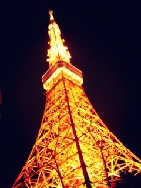

| 2012/07 12 Thu | えーがーおーにーなりまーすよーーに♪♪(o・ω・)ノ)) |

あー東京タワーきれーー♡
前に行ったとき撮った写真だよ(o^^o)
赤い光って、あったかいよね
すきー‼
とゆことで
どもっ
こんにちはるん＼(^^)／
今日は午前中、撮ってあった
トイストーリー３を見て号泣してましたーーヽ(；▽；)ノ
いやー
これは泣くしかでそ。
感動


午後はお洋服片付けてたよー＊
並べてみたらね、
ロングのワンピやスカートが
いち、にー、さんー...10着あったわ‼
((((；ﾟДﾟ)))))))おどろき
それくらいロング好きなんよ♡
こんど写真ブログに載せたいなー( ´ ▽ ` )ﾉ

今回も質問返しありがとう

ランドもシーもどっちもいいよね♡
好きー‼
アトラクションはランドで、
雰囲気はシーっていう方も何人かいて
ちょっと共感\(//∇//)\
でもシーのアトラクションも好きだしなー
ランドの雰囲気も好きだしなー
あーあー優柔不断(´･_･`)
結論。どっちもすきや！
いつも質問ばっかりしてるから
今日はこっちが質問返しー♡
Q&Aだぜぃっ
同じ学年のアイドルで気になる人はいる⁇
＊→ももクロさん‼
特に同じ学年のあーりんちゃんかなー☆
トイストーリーには乗ったの？
＊→乗れなかった( ; ; )
混み混みやってん←
ちはるんは今なにしてますか？
＊→今はー、一昨年にもらった誕プレの
ひつじのお人形片手にちょこみんとアイス片手に
ブログ書いてますー

陽菜ちゃんと2人、声かけられなかった？
＊→大丈夫だったよー( ´ ▽ ` )ﾉ
何かお土産買った？
＊→家族用のお菓子と、
友達の誕プレを買ったよ(o^^o)
ちはるん テスト終わってリフレッシュできたかな？
＊→できたよできたー‼
今日までテスト休みだったから
ディズニー行ったりゆったりしたり(^^)/
ちゃんちーはなんか怖い乗り物ないの？
＊→こう見えて絶叫大好きだから
怖い乗り物はないかもー‼
でもまだ富士急行ったことないから
まだまだですな┐('～`;)┌
ショートのときはどんな髪型だったのかな？
＊→んーどんなやろー
ショートだった頃の堀北真希さんみたいな、
前髪は長くて流してて、
肩につくかつかないかくらいかな

以上ー‼わお
もっと質問募集中( ´ ▽ ` )ﾉ
明後日から大阪だああああ
大阪楽しみだなあ←
今回は、初めて、
私がちはーっと言ったら、るんるーん‼と返してください‼
って言いませんヽ(•̀ω•́ )ゝ✧
うう
だからみなさん私にるんるーん‼
と返してください(´･ω･`)うう
宜しくお願いしますねー♡
今日の質問ー‼
東京タワーと、スカイツリーではどっちが好き⁇
東京タワーのね、外見が好き♡
スカイツリーのね、景色が好き♡
教えてくださいなっ
でわっ
今日はボイスレッスンやあー
みんなで頑張ってくるね(^^)/
あっ！
わんこのさくらが
寝ながらしっぽふってるー(o^^o)
夢かな？かわゆ
ばいるんっ
るんるんっ
ちはるんっ
♪♪(o・ω・)ノ))
コメント(68)
2012/07/12 16:06